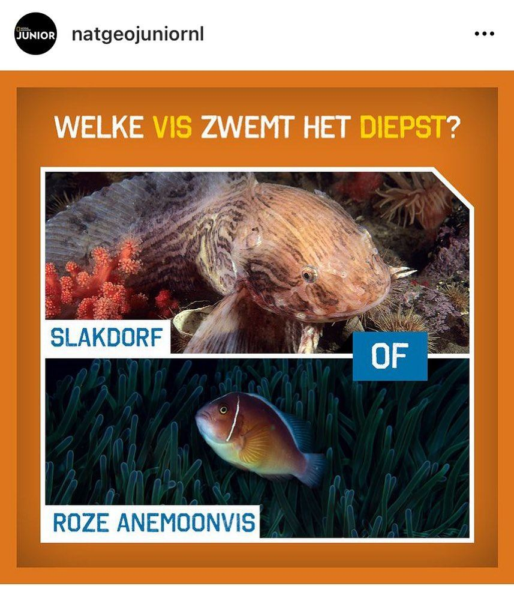

Slakdolf, geen slakdorf
30 juli 2021 · National Geographic Junior
- Op de foto
- Slakdorf
- Het ging over
- Slakdolf

Zullen we het gewoon Slakdolf noemen in plaats van Slakdorf @natgeojuniornl ? Deze mooie vissensoort komt trouwens ook in de Nederlandse zeeën voor. Of Roze anemoonvis de officiële naam is van de onderste soort betwijfel ik ook.